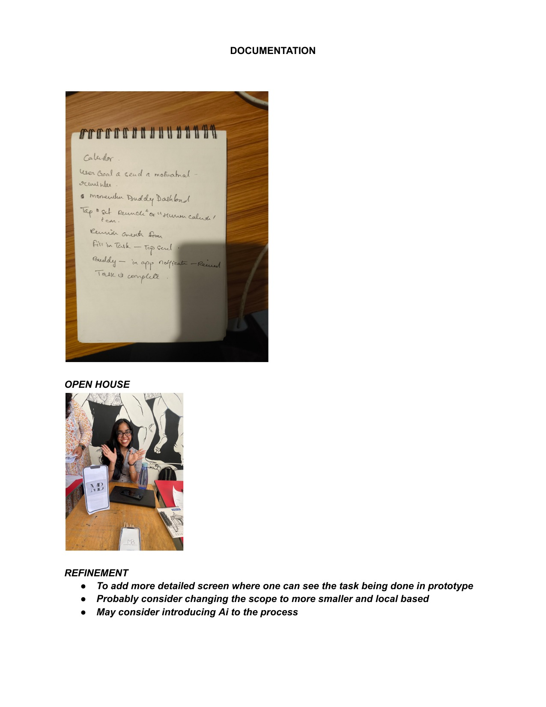
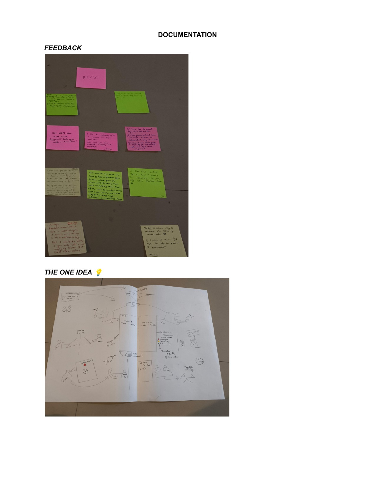
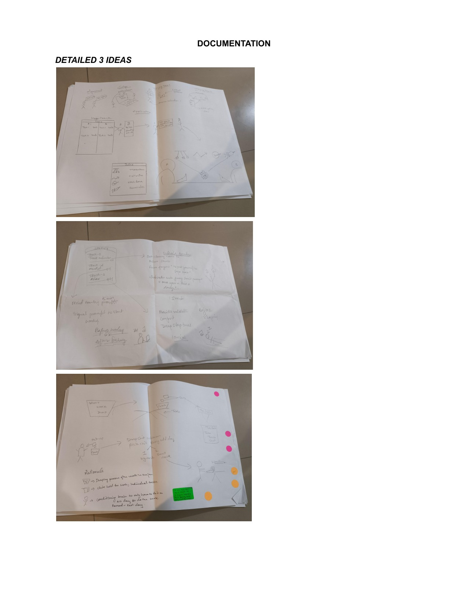
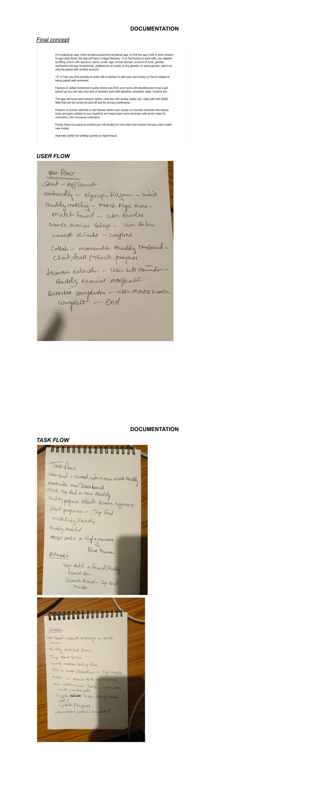

The Procrastination & Solo Work Challenge
Modern remote students and independent knowledge workers suffer from chronic procrastination and motivational depletion during unstructured work days. Traditional productivity software (digital calendars, kanban boards, automated push notifications) acts as a passive, impersonal nag. Users rapidly condition themselves to ignore cold alerts, triggering a self-reinforcing guilt-avoidance cycle.
Automated push notifications generate cognitive fatigue, not motivation. Human accountability,specifically the behavioral phenomenon of "body doubling" (the quiet physical or virtual presence of another focused human),dramatically elevates task initiation and sustained focus.
Questionnaire Iteration & Empathy Mapping
Research began with semi-structured interviews regarding daily task management habits. A critical methodological learning emerged during the survey design phase: initial questions inadvertently introduced response bias by presuming guilt around procrastination.
The questionnaire was iteratively rewritten into neutral, statement-based prompts (Pages 115–116). Empathy mapping revealed two key behavioral tensions:
- Need for Presence without Scrutiny: Users desperately crave peer presence to stay on task, but camera-on Zoom rooms trigger severe self-presentation anxiety.
- Asymmetry in Follow-Through: Accountability groups fall apart when one member slacks, leaving the other stranded. Pairing must be mutual and symbiotic.

The Feature Pivot & 3 Core Pillars
Why Community Groups Were Cut: Early brainstorming explored multi-user accountability communities and public leaderboards. However, feedback proved that group chats induce social comparison anxiety and high coordination friction. The product was deliberately stripped down to focused 1-on-1 peer pairing to keep friction minimal and trust intimate.
The resulting mobile application is structured around three foundational pillars:
- Smart Buddy Matching: An onboarding algorithm that matches peers based on domain (e.g., design, coding, writing), workload volume, and gender preference, backed by user ID verification.
- Momentum Workspace: A shared focus dashboard tracking mutual goals and hosting silent work sessions with built-in chat, audio, and optional privacy-preserving Ghibli-style anime video filters to eliminate camera self-consciousness.
- The Human Calendar: When an upcoming deadline approaches, instead of receiving a bot notification, your matched buddy is prompted to record a 10-second voice note or personalized message, transforming calendar management into a human social interaction.


Evaluation, Limitations & Documentation Gaps
- Digital High-Fidelity UI: [HIGH-FIDELITY FIGMA SCREENS NOT IN DOCUMENT] The submission strictly documents hand-drawn paper prototypes, screen architecture wireframes, and live exhibit playtesting rather than polished vector UI mocks.
- Quantitative Metric Tracking: [APP CONVERSION & RETENTION METRICS NOT DOCUMENTED] Evaluated via academic exhibition feedback. Visitors recommended localized campus pairing and AI-assisted compatibility scoring.
Retrospective
Momentum Buddy proves competence in end-to-end digital UX architecture: taking an ambiguous behavioral problem, neutralizing interview bias, and validating core task flows through low-fidelity prototyping before writing a line of code.